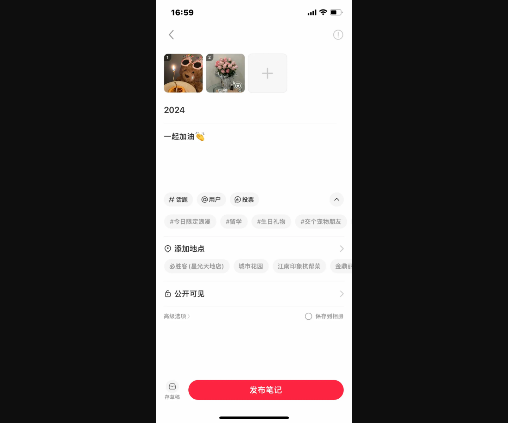
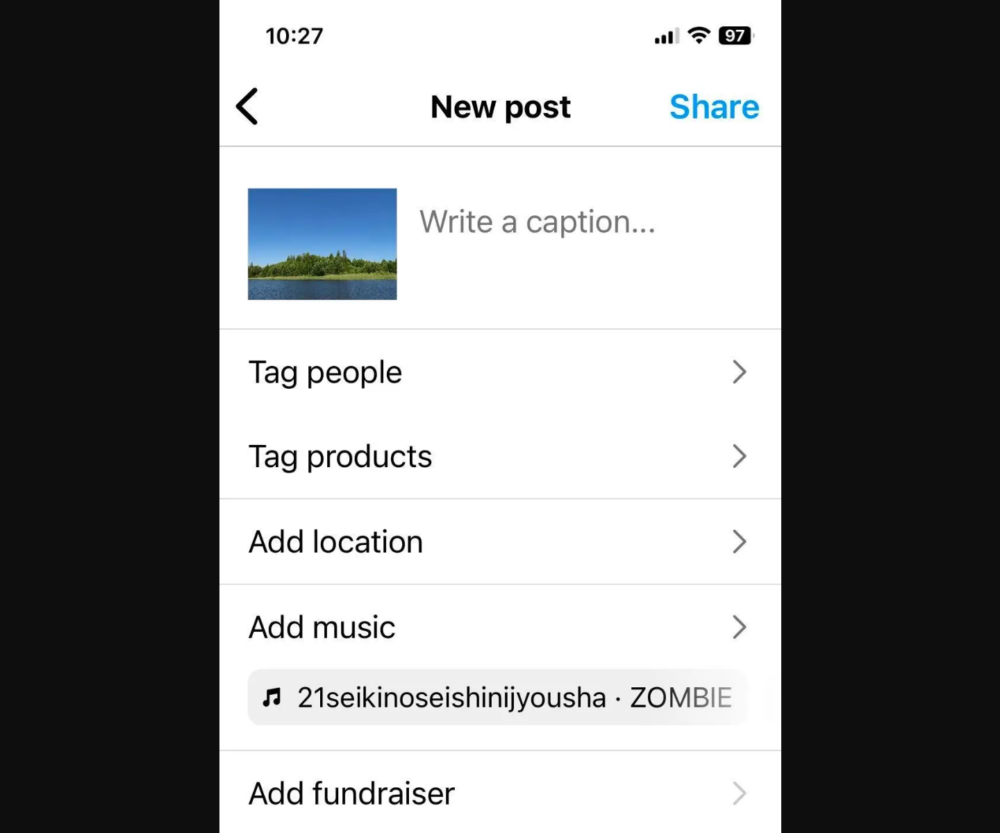
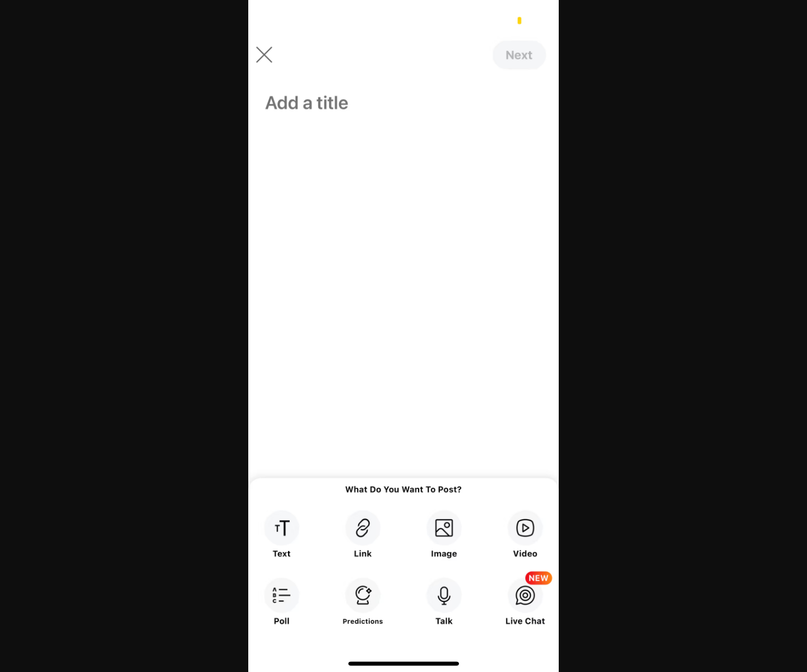
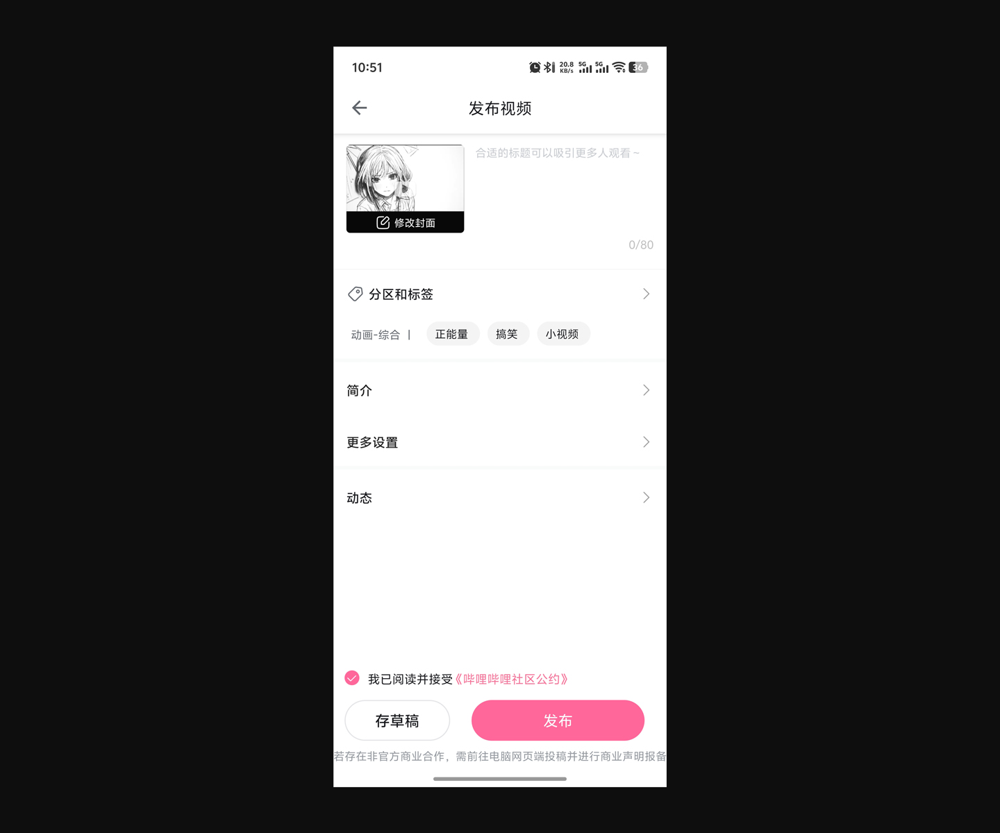

region: 国内 content_model: 多图笔记 editorial_focus: 标题/正文与话题 pre_publish_controls: 地点、可见性、高级选项
https://image.yunyingpai.com/wp/2024/04/ghaCKxplggdb0tTTgeP1.png
比较国内外热门内容社区在移动端发布/发帖流程中的内容类型选择、编辑组织、发布前设置与提交动作。
分类维度：发布页的信息组织与内容模型 · 本次有效素材的主要差异不在地区，而在发布动作如何组织内容：小红书和 Instagram 以已选媒体为起点并通过 caption/标签/地点等元数据完成发布；Reddit 先让用户选择帖子类型；哔哩哔哩则围绕视频封面、标题、分区标签和投稿设置构成结构化投稿表单。因此按发布页的内容模型与编辑组织方式分组最能支持横向比较。 · 有效样本：4
页面先承接图片或多图内容，再把 caption、人物/商品标签、话题、地点、音乐、可见性等作为连续的发布前设置。

https://image.yunyingpai.com/wp/2024/04/ghaCKxplggdb0tTTgeP1.png

https://cdn.prod.website-files.com/67511c13978b4d3b8a2f0c86/69ce9b9e33b7e853e29032f7_20260402T0438-a6fa8894-9c53-41cc-bafc-444a96ec565a.webp
页面把 Text、Link、Image、Video、Poll、Predictions、Talk、Live Chat 等不同帖子形态放在同一选择面板中，先降低内容类型决策成本。

https://images.wondershare.com/filmora/article-images/2023/01/reddit-post-title.PNG
页面围绕视频封面、标题、分区标签、简介、更多设置、动态和社区规则确认形成完整的投稿表单，并在底部集中放置存草稿与发布。

https://dimg.dnkb.com.cn/dnkbcn/imgfile/20260327/27155455rukb.jpeg